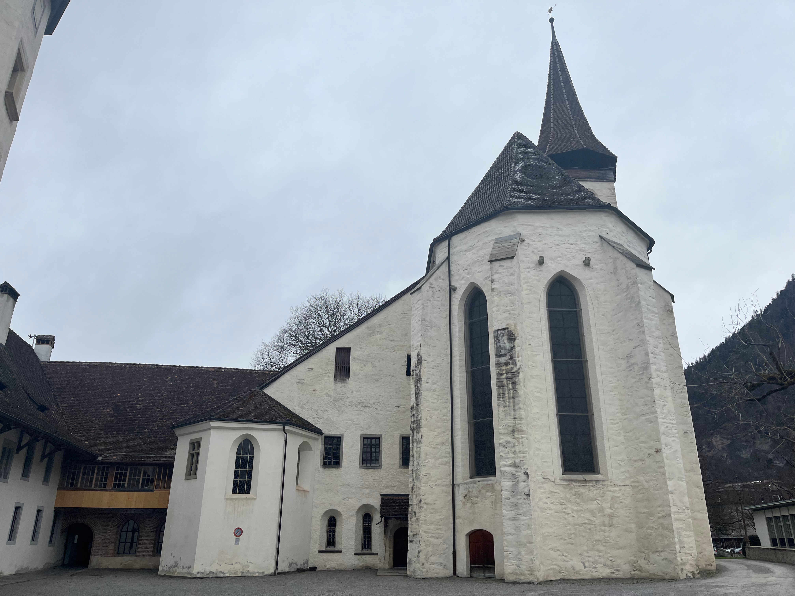
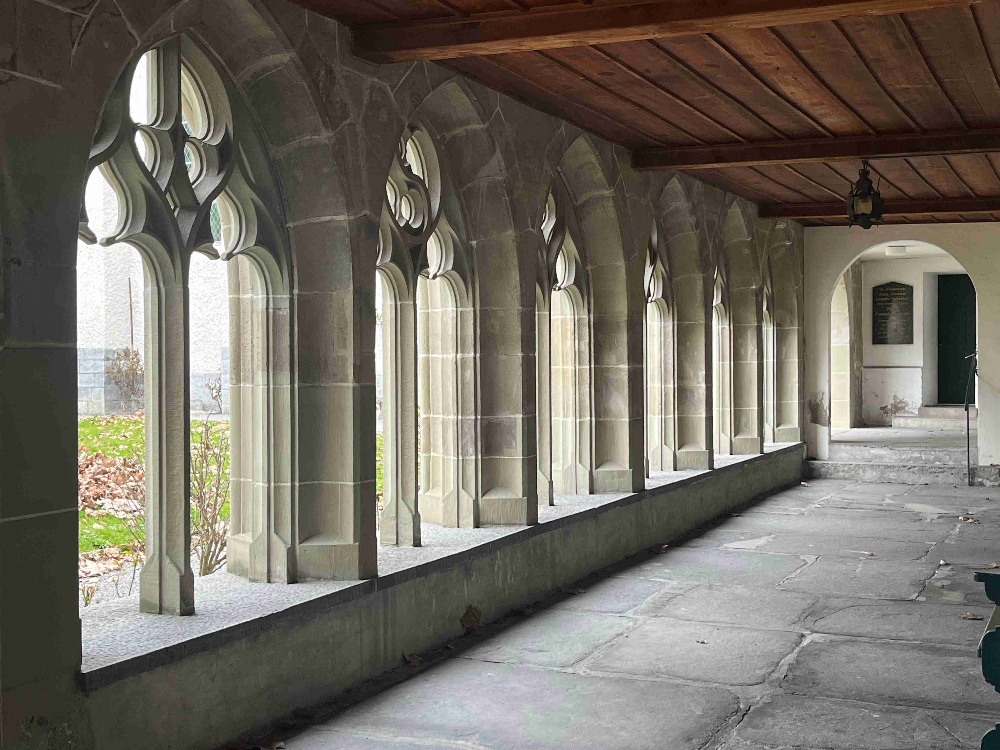

Majestätisch thront sie weit über der Region, deren Zentrum der Tourismus-Ort Interlaken ist: die Jungfrau. Der höchste Berg des weltberühmten alpinen Dreigestirns, zu dem noch der Eiger und der Mönch gehören, wird jahrein und jahraus von tausenden von Tourist:innen fotografiert, und wer es finanziell vermag, reist auch hinauf aufs Jungfraujoch. Die wenigsten Einheimischen, geschweige denn die Gäste, wissen jedoch, dass die Jungfrau ihren Namen von der an ihrem Fuss liegenden Wengernalp erhalten hat, die früher ‹Jungfrauenberg› hiess. Diese Alp gehörte einst den Chorfrauen des Klosters Interlaken, die gemäss ihrem Gelübde jungfräulich leben mussten. Interlakens Geschichte ist zutiefst mit der Gründung des Augustiner-Stifts ‹Unserer Lieben Frau› verwoben, das erstmal 1133 in einer Urkunde des römisch-deutschen Kaisers Lothar III. (1075–1137) erwähnt wird. Darin nimmt der Kaiser die einige Jahre zuvor vom Freiherr Seliger von Oberhofen gestiftete Propstei unter seinen Schutz.
Die Blütezeit des Klosters
Die Augustiner-Chorherren waren Priester, die in Gemeinschaft nach der
Ordensregel des Augustinus von Hippo (354–430) lebten.
Augustiner-Chorherren gelten als ältester Priesterorden in der Kirche.
Im Zuge einer Reform dieser Gemeinschaft im 11./12. Jahrhundert
entstanden zahlreiche Klöster (Chorherrenstifte) auch in der Schweiz. In
Interlaken unterstanden sie einem Propst. Die neuere Forschung nimmt an,
dass schon sehr früh, noch im 12. Jahrhundert, das Kloster als
Doppelkloster auch für Chorfrauen oder Stiftsdamen geführt wurde, die in
Klausur lebten. Das Doppelkloster war geteilt in einen inneren Konvent
(Frauen) und einen äusseren (Männer). Erstmals weisen Schriftquellen von
1247 auf einen inneren Frauenkonvent in Interlaken hin, dem eine
Meisterin vorstand. Diese sogenannten Doppelklöster finden sich im
Hochmittelalter weit verbreitet. Entsprechend den archäologischen Daten
waren die Klosteranlagen in Interlaken von beträchtlichem Ausmass.
Während das Männerkloster, der äussere Konvent, in seiner besten Zeit um
die 50 Mitglieder zählte (ca. 30 Chorherren, 20 Laienbrüder), gehörte
der Frauenkonvent damals mit seinen bis zu 350 Chorfrauen zu den
grössten in Europa und war ein Anziehungspunkt weit über die Region
hinaus. Kaiser, Könige, Päpste übertrugen dem Kloster reichlich
Privilegien.
Die bedeutendste Entwicklung, sowohl spirituell wie materiell, durchlief
das Kloster im 13. und 14. Jahrhundert. Wahrscheinlich aus Platznot
zogen die Schwestern um 1300 in einen neu errichteten und
repräsentativeren Konvent um. Ungefähr zur selben Zeit wurde für die
Kirche des Männerkonvents ein neuer gotischer Chor gebaut. Beide
Baumassnahmen fallen in die Zeit, als das Doppelkloster zum Zentrum der
Herzöge von Österreich im Berner Raum wurde und vom Hause Habsburg
grosszügige Unterstützung erhielt. Deshalb liegt die Vermutung nahe,
dass die Männerkirche als Folge des Niedergangs des habsburgischen
Einflusses ab 1340 unvollendet blieb. Die Abbildung gibt Aufschluss über
das Areal der beiden Klöster um 1300:
Legende: 1 Klosterkirche; 4 Annex südseitig; 5 Kreuzhof; 6 Konventflügel West; 7 Flügel Süd; 8 Flügel Ost; 9 wahrscheinliche Chorherrenhäuser; 11. Vorhalle mit Verlängerung; 12 Areal des Frauenkonvents mit umgebender Immunitätsmauer; 13 Klosterkirche der Frauen; 14 Frauenkloster; 15 Landwirtschaftshof mit verschiedenen Ökonomiegebäuden; 16. Gotischer Chor mit Turm und Sakristei. - In grau die heutigen Gebäude. (Abbildung zur Verfügung gestellt von: Archäologischer Dienst des Kantons Bern)
Durch den kontinuierlichen Erwerb vieler weltlicher Güter, aber auch
durch Schenkungen, die dem Kloster dank seines Ansehens gemacht wurden,
wie zum Beispiel der eingangs erwähnte Jungfrauenberg, entwickelte es
sich zur grössten Grundherrschaft im Berner Oberland. Neben den
seelsorgerlichen und klösterlichen Aufgaben wirkte das Kloster für die
gesamte Region als wichtiger ökonomischer Akteur in der Rodung,
Urbarmachung und Nutzung des Bodens und der Gewässer, aber auch für das
Handwerk.
Spätestens ab dem 14. Jahrhundert unterhielten die Chorherren und die
Stiftsdamen auch eine Schule für Knaben und Mädchen aus privilegierteren
Gesellschaftsschichten.
Der Niedergang
Gegen Ende des 14. Jahrhunderts mehrten sich die Klagen und Rechtsfälle,
welche das Kloster selbst führte oder welche gegen das Kloster gerichtet
waren. Doch auch im Inneren nahm die Missstimmung zu; Streitereien
zwischen Chorherren und Schwestern. All das war sicherlich mit ein
Grund, weshalb die Zahl der Chorherren und Chorfrauen kontinuierlich
sank. Erhaltene Dokumente vergleichbarer Gemeinschaften zeigen, dass das
Leben in Doppelklöstern häufig zu Spannungen zwischen Mönchen und Nonnen
führte. Letztere fühlten sich – oft nicht ohne Grund – vernachlässigt
und bei der Güterverteilung benachteiligt. Dazu kam die Problematik in
Bezug auf die Erfüllung der mit der Klosterregel verbundenen Versprechen
der evangelischen Räte: Armut, sexuelle Enthaltsamkeit und Gehorsam. In
Interlaken ranken sich bis heute viele Geschichten rund um das Leben
dieser Chorherren und Stiftsdamen im damaligen Doppelkloster. Mag auch
vieles Klatsch und Tratsch sein und auf Gerüchten, Übertreibungen und
Mutmassungen beruhen, dürfte dahinter doch da und dort ein wahrer Kern
stecken. Gesichert ist, dass es ab 1449 schwere Klagen gegen die
Klosterinsassen in Interlaken gab, das Kloster sei eine Lasterschule.
Wegen des ständig schwelenden Streits zwischen innerem und äusserem
Konvent kam es zu verschiedenen offiziellen Visitationen. 1472 fand eine
mehrere Tage dauernde, gründliche Untersuchung des Klosters durch eine
bischöfliche Kommission des Bistums Lausanne statt, zu dem Interlaken
gehörte.
Der Versuch einer Klosterreform dauerte von 1472–1477, auch unter
Einbezug der bernischen Obrigkeit. Trotz der angeordneten
Reformmassnahmen gelang es nicht, grundlegend Ordnung und Ruhe zu
schaffen. Zweimal innerhalb weniger Jahre waren zudem Teile des
Frauenklosters abgebrannt (1472/1479). Der Frauenkonvent konnte sich
nicht mehr erholen. 1484 wurde die Auflösung durch Papst Innozenz VIII.
(1432–1492) eingeleitet, unter anderem auch wegen Unordnung und
Sittenlosigkeit. Bern als Schutzmacht des Klosters hatte den Papst darum
ersucht; dabei wird Berns Eigennutz im Blick auf die Besitzungen des
Frauenkonvents bestimmt eine nicht zu unterschätzende Rolle gespielt
haben. Durch eine Bulle desselben Papstes kamen schliesslich alle Güter
des Frauenkonvents dem kurz zuvor gegründeten St. Vinzenzstift in Bern
zugute. Im Jahr der Auflösung lebten gerade noch acht oder neun
Schwestern im Konvent.
Der Männerkonvent überlebte jenen der Frauen nur um 44 Jahre. Im Zuge
der Reformation im Kanton Bern übertrug der letzte Propst am 15. März
1528 dem Stande Bern die Verantwortung über das Kloster und dessen
Güter. Die Chorherren erhielten eine finanzielle Abfindung und für die
Verwaltung wurde ein Vogt eingesetzt. Ein Teil der Klostergebäude diente
nun als Amtssitz des Landvogtes, ein anderer Teil ab 1523 als Spital.
Der gotische Chor wurde 1562 in einen Kornspeicher und einen Weinkeller
umgebaut, 1746–1750 der Westflügel abgerissen und das sogenannte Schloss
gebaut, in welchem sich heute das Regierungsstatthalteramt befindet.
Die ehemalige Klosteranlage heute
Ostansicht: Die Schlosskappelle (links im Bild), der gotische Chor, dahinter die Spitze des Kirchturms. (Bild: Manuel von Däniken)
Wer sich Zeit nimmt und das Schlossareal mit der reformierten Kirche besucht, hernach um die Kirche herumgeht vorbei am Kirchturm und Chor, vorbei an der Laube und dem Chorherrengebäude und sich dann für einen kurzen Augenblick auf die Mauer des Kreuzgangs oder in die Schlosskappelle setzt, kann noch etwas von der ehemaligen Grösse des Klosters erahnen.
Der übriggebliebene Flügel des Kreuzgangs (Bild: Manuel von Däniken)
Vom bedeutenden Frauenkonvent ist leider an der Oberfläche nichts mehr zu sehen. Zeugin seines einstigen Bestehens ist die mächtige Jungfrau, die ihren Namen letztlich den Chordamen verdankt. Es ist bemerkenswert, dass auf diesem Teil der damaligen Klosteranlage heute die römisch-katholische Pfarrkirche steht und die evangelisch-reformierte Gemeinde den gotischen Chor der Chorherren mit später angebautem Kirchenschiff als Gotteshaus nutzt. So setzt sich das Gebet an diesem Ort, an dem es während Jahrhunderten gepflegt wurde, zwar mit Unterbruch, aber dann doppelt fort: mal nebeneinander, mal miteinander.
Manuel von Däniken ist Student im Master an der Theologischen Hochschule Chur
Weitere Artikel von {{ author.author }} finden Sie hier:
Beitragsbild von der Jungfrau: zvg Erich Häsler
Zur Vertiefung:
- Rennefahrt, Hermann (Hg.): Das Stadtrecht von Bern. Staat und Kirche: Die Rechtsquellen des Kantons Bern, Bd. VI erste Hälfte, Aarau 1960.
- Würsten, Hans Peter: Kloster und Schloss Interlaken: Neun Jahrhunderte bauen, nutzen und pflegen, Bern 2014.
- Gallati, Rudolf: Aarmühle Interlaken: Eine Ortsgeschichte, Interlaken 1991.